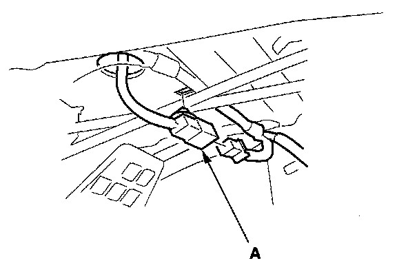
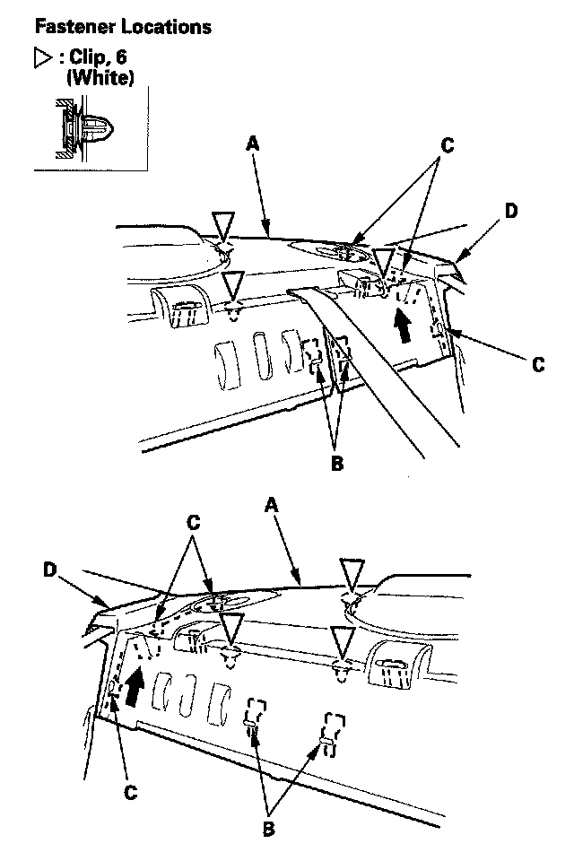
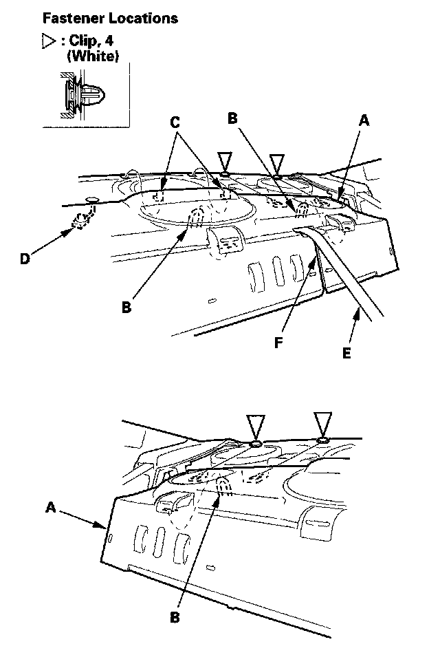
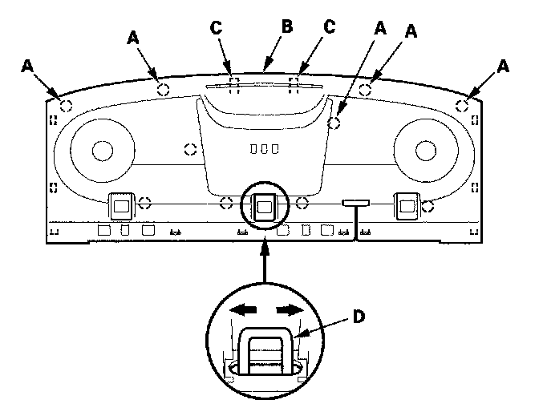
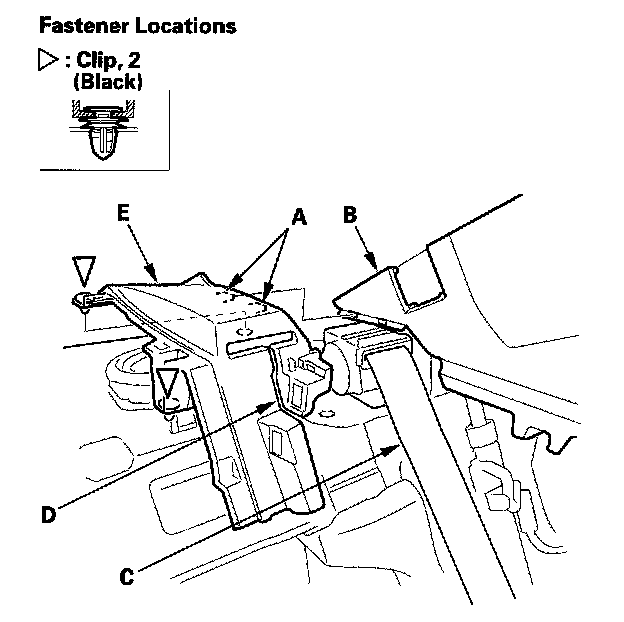
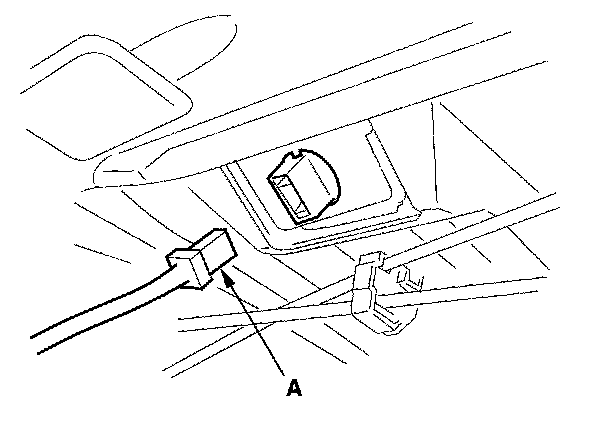
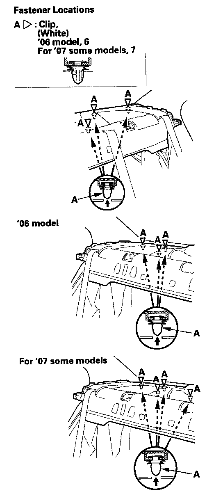
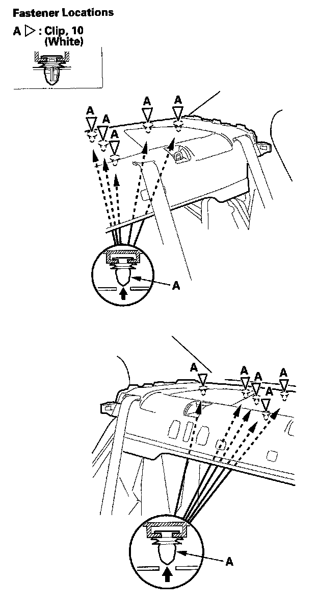
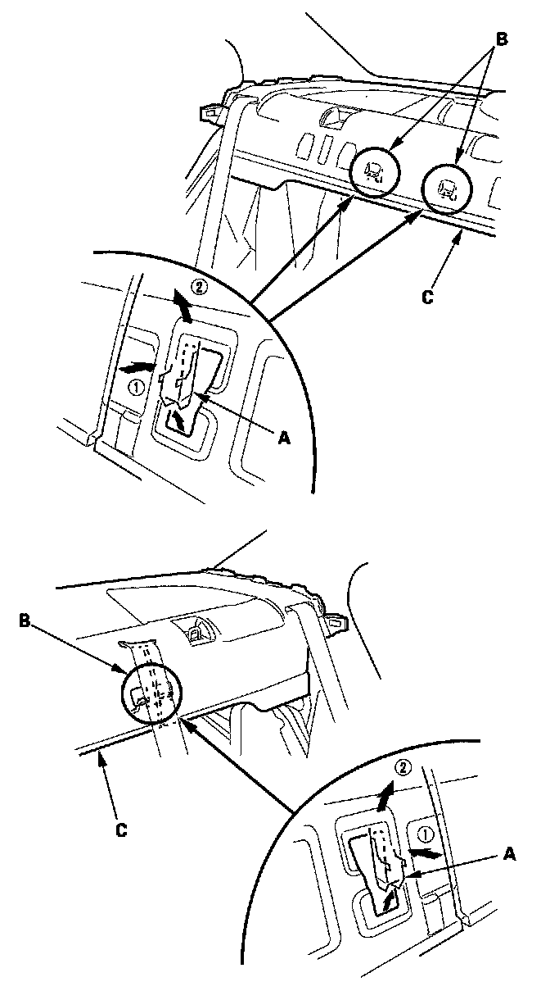
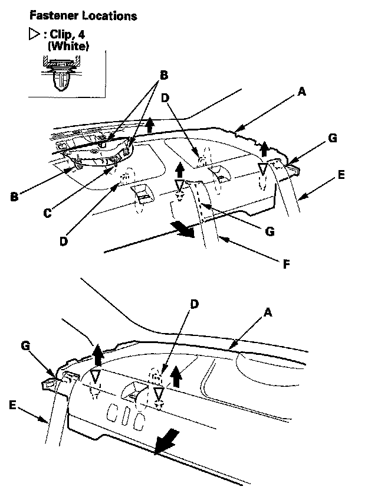

Rear Shelf: Service and Repair
Trim Removal/Installation - Rear Shelf AreaSpecial Tools Required
KTC trim tool set SOJATP2014 *
* Available through the American Honda Tool and Equipment Program
Rear Shelf - 2-door
SRS components are located in this area. Review the SRS component locations and the precautions and procedures before doing repairs or service.
NOTE:
- Put on gloves to protect your hands.
- Take care not to bend or scratch the rear shelf and trim.
- Use the appropriate tool from the KTC trim tool set to avoid damage when prying components.
1. Fold both seat-backs forward.

2. From the trunk compartment, disconnect and detach the high mount brake light connector (A).

3. Carefully lift up on the front edge of the rear shelf (A) by hand to release the front hooks (B) from the body, to detach the clips, and to disengage the side hooks (C) from the rear shelf extension (D).

4. While lifting the front of the rear shelf (A) up to release each portion away from three child seat tether anchor strikers (B), pull the shelf back to release it from the clips remain on the rear parcel shelf, and to release the hooks (C) near the high mount brake light.
5. Pull the high mount brake light connector (D) in from the trunk compartment.
6. Pull the rear center seat belt (E) out through the slit (F) in the rear shelf, then remove the rear shelf.

7. Install the rear shelf in the reverse order of removal, and note these items:
- Check if the clips are damaged or stress-whitened, and if necessary, replace them with new ones.
- When installing the rear shelf, slip the rear center seat belt through the slit in the rear shelf.
- With the rear clips (A) installed in the rear parcel shelf (body), set the rear shelf (B) on the parcel shelf. Push down on the rear edge of the shelf, then slide it back to set the rear clips and hooks (C) into place. Center the rear shelf using the center tether anchor (D) for reference. Push down on the rear shelf to set the remaining clips.
- Make sure the high mount brake light connector is plugged in properly.
Special Tools Required
KTC trim tool set SOJATP2014 *
* Available through the American Honda Tool and Equipment Program
Rear Shelf Extension - 2-door
NOTE:
- Take care not to bend or scratch the extension and panels.
- Use the appropriate tool from the KTC trim tool set to avoid damage when prying components.
1. Remove these items:
- Rear shelf
- Rear side trim panel

2. Detach the clips, and release the hooks (A) from the C-pillar trim (B).
3. Pull the rear seat belt (C) out through the slit (D) in the rear shelf extension (E), then remove it.
4. Install the extension in the reverse order of removal, and note these items:
- Check if the clips are damaged or stress-whitened, and if necessary, replace them with new ones.
- When installing the rear shelf extension, slip the rear seat belt through the slit in the extension.
Special Tools Required
KTC trim tool set SOJATP2014 *
* Available through the American Honda Tool and Equipment Program
Rear Shelf - 4-door
SRS components are located in this area. Review the SRS component locations and the precautions and procedures before doing repairs or service.
NOTE:
- Put on gloves to protect your hands.
- Take care not to bend or scratch the rear shelf and trim.
- Use the appropriate tool from the KTC trim tool set to avoid damage when prying components.
1. Remove these items:
- Rear seat cushion
- Rear seat-back:
- Fold down
- Split fold down
- Rear seat side bolster, both sides
- Rear door opening seal, as needed
- C-pillar trim, both sides

2. From the trunk compartment, disconnect the high mount brake light connector (A).

3. Except Si model. From the trunk compartment, release the white clips (A) by tapping on them.

4. Si model: From the trunk compartment, release the white clips (A) by tapping on them.

5. Release the hooks (A) by pushing in on the detents (B) on the rear shelf (C), then lift up on the front edge of the shelf at each detent.

6. Lift the rear shelf (A) upward to detach the remaining four clips. Except Si model: Release the hooks (B) of the high mount brake light from the rear shelf. Release the pin (C) from the holes on the body.
7. Release each anchor rod (D) out through the hole in the rear shelf, and pull both rear seat belts (E) and rear center seat belt (F) out through the slits (G) in the rear shelf.
8. Install the shelf in the reverse order of removal, and note these items:
- Check if the clips are damaged or stress-whitened, and if necessary, replace them with new ones.
- When installing the rear shelf, slip the rear seat belt through the slit and the rear center seat belt into the lid opening in the rear shelf.
- Push the clips and hooks into place securely.
- Make sure the high mount brake light connector is connected securely.